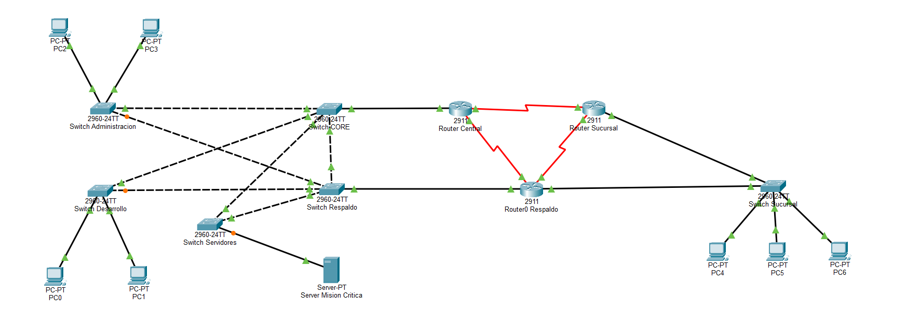

↗
Redundancia
Existen caminos alternativos para recuperar la comunicación ante la caída de un enlace.
PROYECTO FINAL · REDES DE COMPUTADORAS
Una red empresarial diseñada para mantener la comunicación mediante caminos alternativos cuando falla un enlace o un componente de la infraestructura.
OBJETIVO
Ante una falla controlada, la red debe encontrar o activar un camino alternativo sin depender de una reconfiguración manual del usuario final.
DEMOSTRACIÓN
Observa la configuración y las pruebas de redundancia realizadas en Cisco Packet Tracer.
El reproductor de YouTube requiere una página servida por HTTP/HTTPS. Al publicar el sitio en GitHub Pages, el video se cargará directamente aquí.
Ver el video en YouTube ↗01 · EL PROYECTO
La práctica simula una red empresarial redundante en Cisco Packet Tracer. La idea central es que una falla no implique necesariamente perder la comunicación.
Existen caminos alternativos para recuperar la comunicación ante la caída de un enlace.
HSRP permite disponer de un gateway redundante para las VLAN de usuarios.
OSPF y Rapid PVST+ reaccionan ante cambios de conectividad y habilitan rutas o puertos alternativos.
02 · TOPOLOGÍA
La topología conecta tres routers en una estructura triangular, junto con switches redundantes, segmentos VLAN, un servidor y una sucursal.

03 · PROTOCOLOS
Conceptos resumidos para entender qué función cumple cada tecnología dentro de la solución.
Protocolo de enrutamiento dinámico que intercambia información de estado de enlace y calcula rutas según su costo.
Variante rápida de STP que evita bucles de Capa 2 y mantiene caminos alternativos disponibles.
Proporciona una puerta de enlace virtual para que los equipos mantengan el mismo gateway aunque falle el router principal.
Divide la red lógica en segmentos independientes para organizar el tráfico por función y departamento.
04 · PRUEBAS
No se trata solamente de configurar los protocolos: se interrumpieron enlaces de forma controlada y se observó cómo reaccionó la red.
Se interrumpió CENTRAL–SUCURSAL. OSPF retiró la ruta directa y utilizó el camino a través de RESPALDO.
El puerto alternativo de SW-ADMIN pasó de Alternate BLK a Root FWD, habilitando el camino de respaldo.
Al perder el gateway principal, el router de respaldo puede asumir el estado Active para conservar la puerta de enlace virtual.
06 · CONCLUSIÓN
El proyecto integra redundancia de Capa 2, Capa 3 y gateway para construir una red más resistente. La principal lección es que la disponibilidad no depende de un solo protocolo: depende de combinar mecanismos que cubran distintos puntos de fallo.